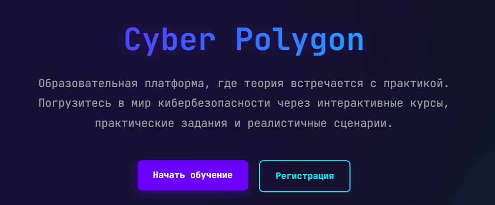
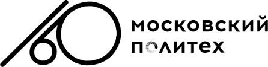
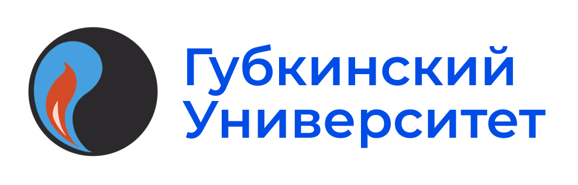
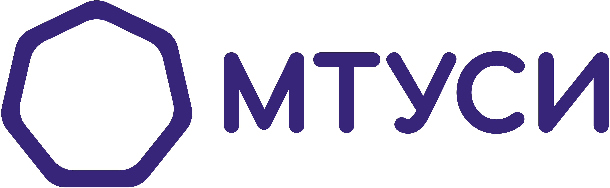

О проекте

Создание киберполигона
Цель проекта — создание киберполигона для сокращения затрат на подготовку киберучений, обеспечения гибкости моделирования технологических процессов и предоставления возможности для практического обучения и развития навыков в области кибербезопасности людям с нулевой подготовкой.
Этапы реализации проекта: обсуждение, разработка макета, разработка киберполигона
Цели проекта
- Сокращение затрат на подготовку киберучений
- Обеспечение гибкости моделирования технологических процессов
- Предоставление возможности для практического обучения и развития навыков в области кибербезопасности людям с нулевой подготовкой
Партнеры проекта


